R01–R03: echte Browserbelege
Gezielte Abschlusskorrektur für PR #9. Die Originalaufnahmen wurden nicht zugeschnitten, übermalt oder nachgestellt. Links auf die Bilder öffnen ihre volle Auflösung.
Diese Galerie zeigt eine Auswahl. Originalberichte enthalten Handlungen, Zeitpunkte, Adressen, Viewports und Quellstände. Dateiindex mit SHA-256. Linux-Browser und simulierte Touch-Eingaben sind keine Tests auf physischer iPad-Hardware.
R01: Historische CSV bleiben lesbar und auswertbar
Schülerhandlung beziehungsweise Lehrkraftprüfung: Historische Lehrkraftwerkzeuge öffnen, unveränderte V1-Klasse-8-Datei auswählen, Messreihe als CSV speichern. Fischwerte unbekannter historischer Bedeutung bleiben leer und ausdrücklich unbekannt; bekannte Werte und echte Nullen bleiben erhalten. Beide Originale wurden in beiden Engines und zwei Formaten mit tatsächlichen Downloads geprüft.
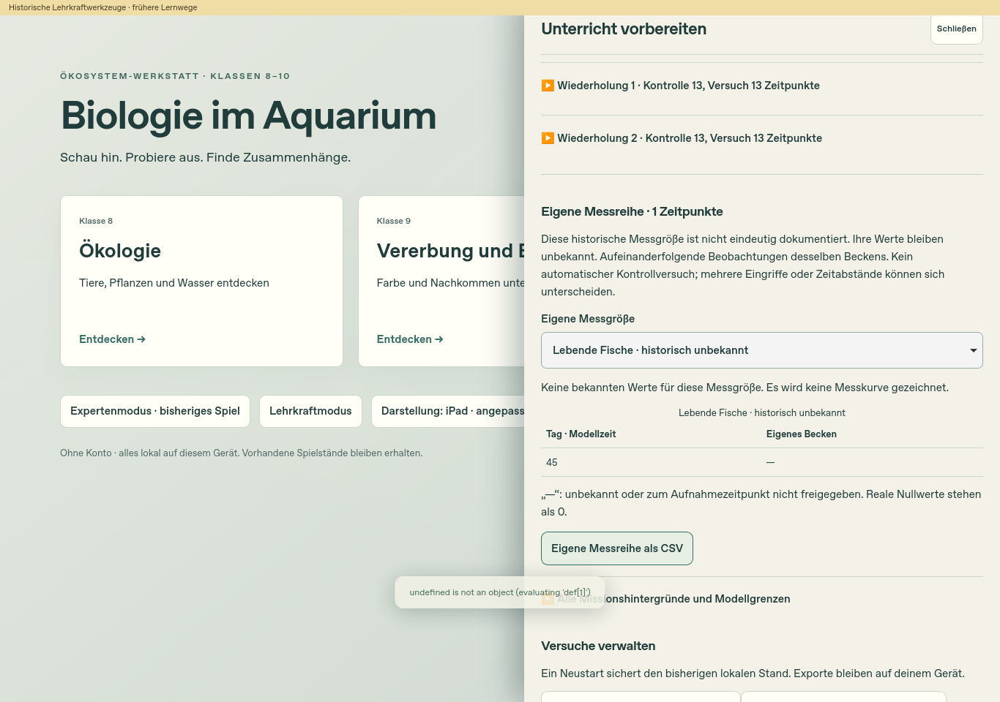
Vorher: Der CSV-Klick endet im FehlerHEAD 5b661044cc85f640518572b5cd8fb4974d9d213b{'width': 1366, 'height': 960} · 2026-10-24T06:55:37.185581+00:00http://127.0.0.1:8000/r-before/?expert=1&archive-tools=1Originalbericht
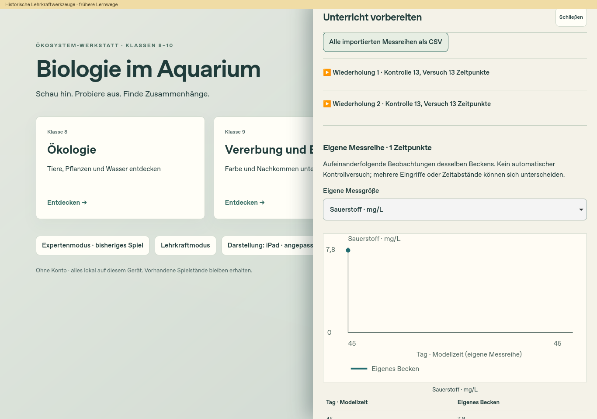
Nachher: Messreihe bleibt bedienbar, CSV tatsächlich heruntergeladenHEAD e8b9850724c0d354cfb0b5367c48ca796ba70d95{'width': 1366, 'height': 960} · 2026-10-24T07:32:14.420231+00:00http://127.0.0.1:8000/aquarium-simulation/?expert=1&archive-tools=1Originalbericht
Tatsächliche Klasse-8-CSV mit unbekannten Fischwerten · Klasse 9 als Kontrolle · Tatsächlicher SVG-Download · Chromium-Prüfung · WebKit-Prüfung
Handlung: Im historischen Klasse-8-Produkt zur Messgröße gehen und von Sauerstoff auf die historische Fischzahl wechseln. Mit Tastatur und anschließend Maus beziehungsweise Touch zurückwechseln. Die automatisierte Prüfung verlangt Fokus und höchstens drei Pixel Abweichung der Feldposition; es gibt keine globale Scrollsperre.
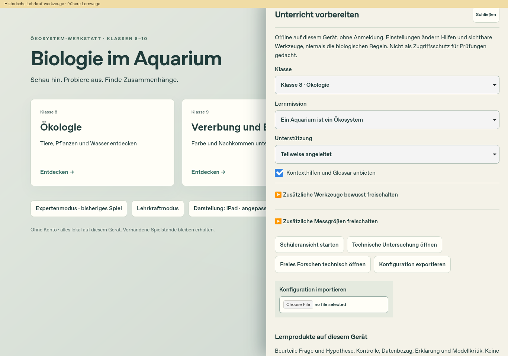
Vorher: Nach dem Wechsel springt das Panel (desktop)HEAD 5b661044cc85f640518572b5cd8fb4974d9d213b{'width': 1366, 'height': 960} · 2026-10-24T06:55:36.774356+00:00http://127.0.0.1:8000/r-before/?expert=1&archive-tools=1Originalbericht
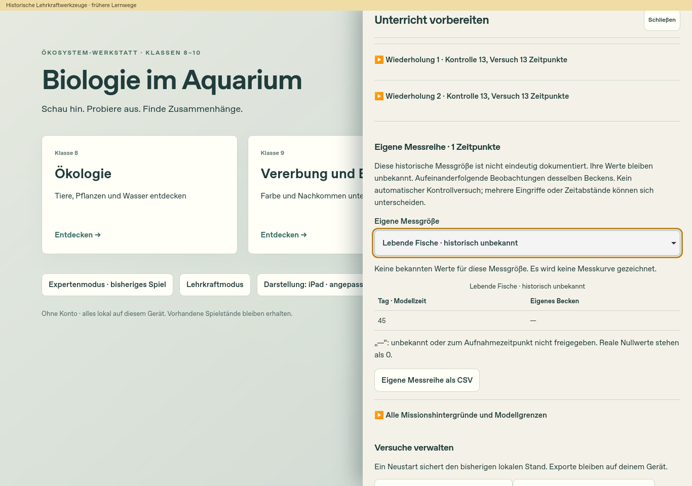
Nachher: Auswahl und Messdarstellung bleiben am Bedienort (desktop)HEAD e8b9850724c0d354cfb0b5367c48ca796ba70d95{'width': 1366, 'height': 960} · 2026-10-24T07:32:12.432945+00:00http://127.0.0.1:8000/aquarium-simulation/?expert=1&archive-tools=1Originalbericht
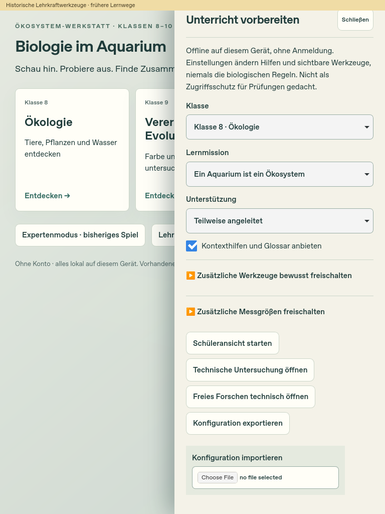
Vorher: Nach dem Wechsel springt das Panel (portrait)HEAD 5b661044cc85f640518572b5cd8fb4974d9d213b{'width': 768, 'height': 1024} · 2026-10-24T06:55:39.213937+00:00http://127.0.0.1:8000/r-before/?expert=1&archive-tools=1Originalbericht
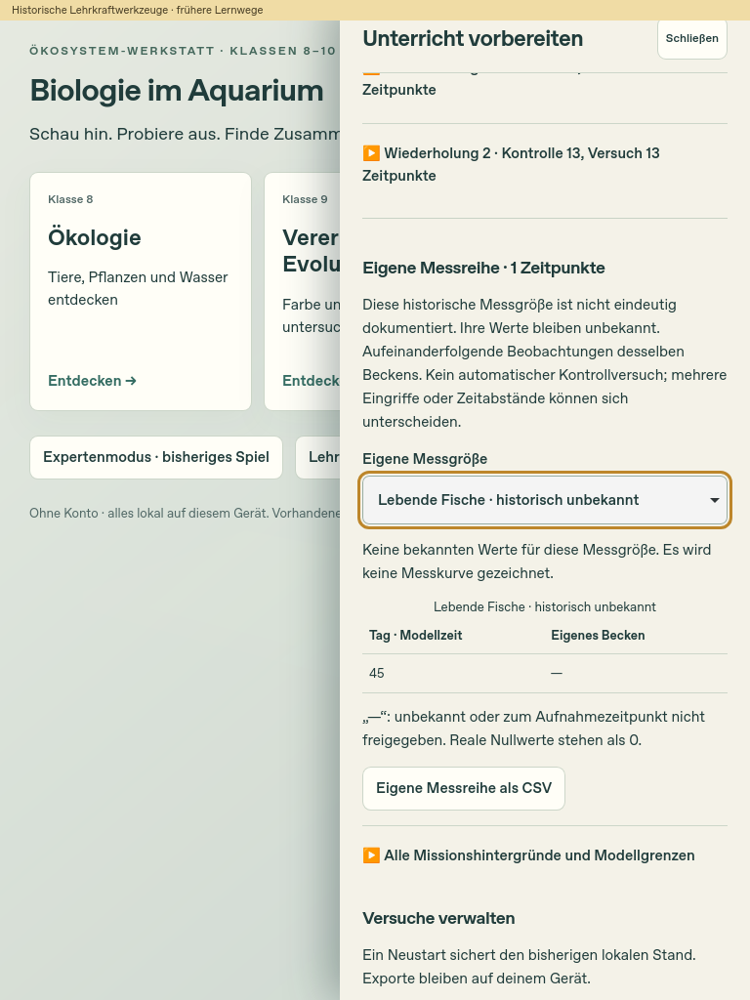
Nachher: Auswahl und Messdarstellung bleiben am Bedienort (portrait)HEAD e8b9850724c0d354cfb0b5367c48ca796ba70d95{'width': 768, 'height': 1024} · 2026-10-24T07:32:25.486919+00:00http://127.0.0.1:8000/aquarium-simulation/?expert=1&archive-tools=1Originalbericht
R03: Interne Wege in der bereits geladenen Einzeldatei
Handlung: Aquarium.html über HTTP laden und das Aquarium vollständig starten. Danach Netzwerkzugriffe sperren und über die sichtbaren Menüs M1–M6, die drei Forschungsjahrgänge, Expertenmodus, Tutorial und historische Werkzeuge öffnen. Die Prüfläufe unterscheiden den strikten Browser-Offlineschalter von vollständig blockierten HTTP-Zugriffen; die WebKit-Grenze beim Lesen lokaler Dateien wird im Prüfbericht ausdrücklich erklärt.
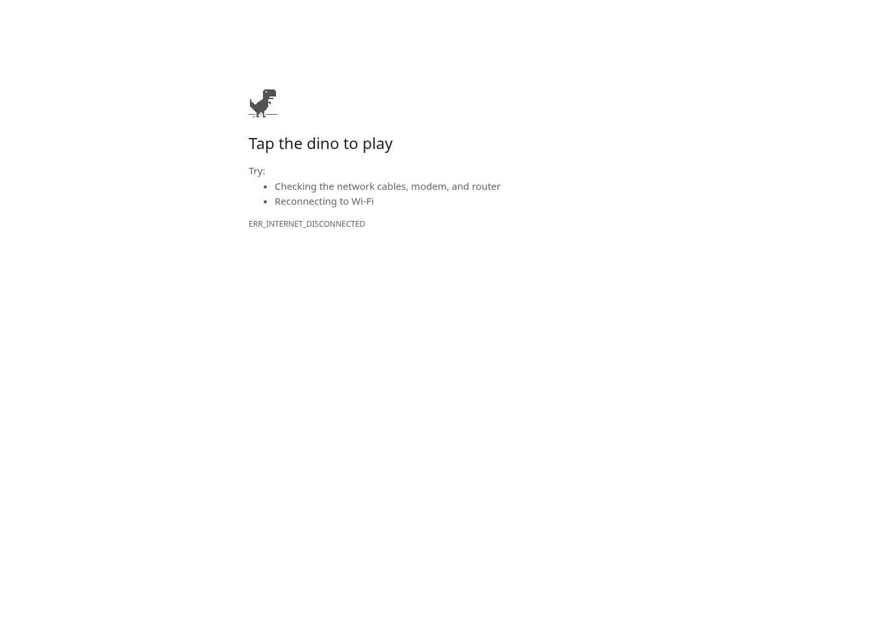
Vorher: Chromium fordert beim internen Wechsel ein neues Dokument anHEAD 5b661044cc85f640518572b5cd8fb4974d9d213b{'width': 1366, 'height': 960} · 2026-10-24T06:55:53.308292+00:00chrome-error://chromewebdata/Originalbericht
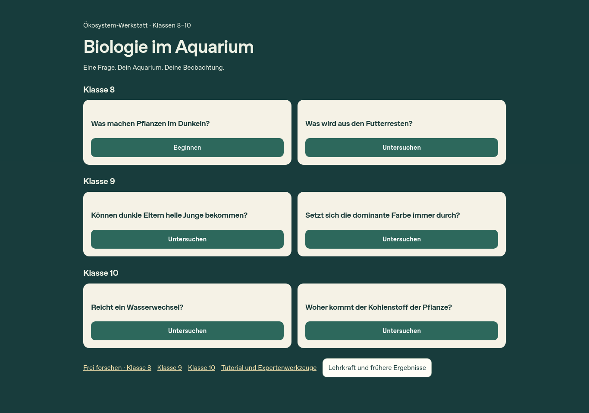
Vorher: Auch WebKit scheitert am neuen DokumentaufrufHEAD 5b661044cc85f640518572b5cd8fb4974d9d213b{'width': 1366, 'height': 960} · 2026-10-24T06:55:47.445970+00:00http://127.0.0.1:8000/standalone-m1/Originalbericht
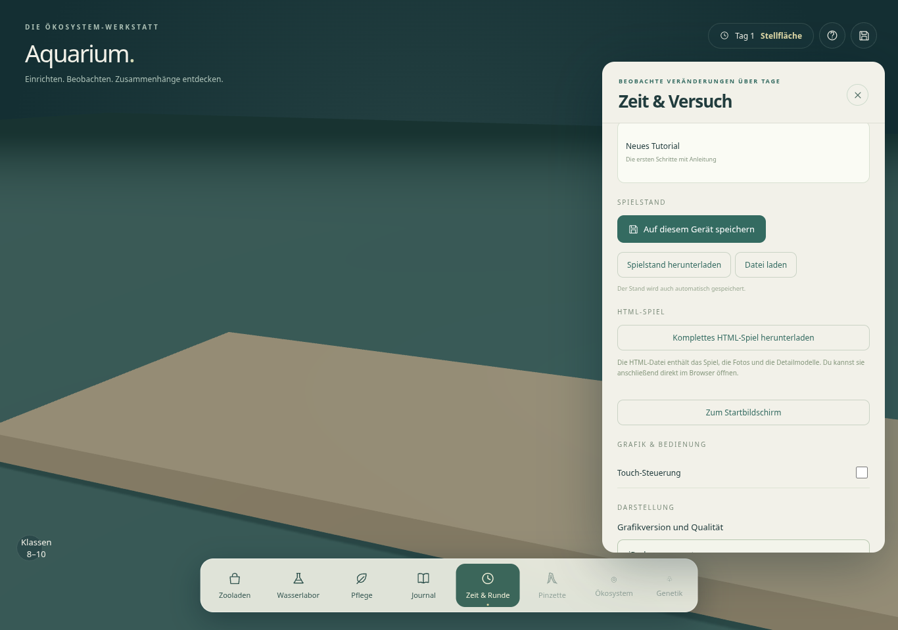
Die neue HTML-Datei wurde über die Spiel-Schaltfläche heruntergeladenHEAD e8b9850724c0d354cfb0b5367c48ca796ba70d95Originalbericht
Bytezahl, SHA-256 und Downloadzeit. Die große Einzeldatei wird außerhalb Git gespeichert. Ein vollständiges Neuladen einer HTTP-Adresse bei abgeschaltetem Netz wird nicht versprochen.
Die sechs geschützten Lernwege
Die folgenden Abschlussbilder gehören zu vollständigen eigenen Abläufen mit Fehlantworten, Hilfen, Pause, Wiederholung, Speicherung und Datei-Rückkehr. Sie belegen technische Durchführung; sie sind kein empirischer Nachweis gelungener Lernprozesse. Die ausführlichen Handlungen stehen in den Originalberichten.
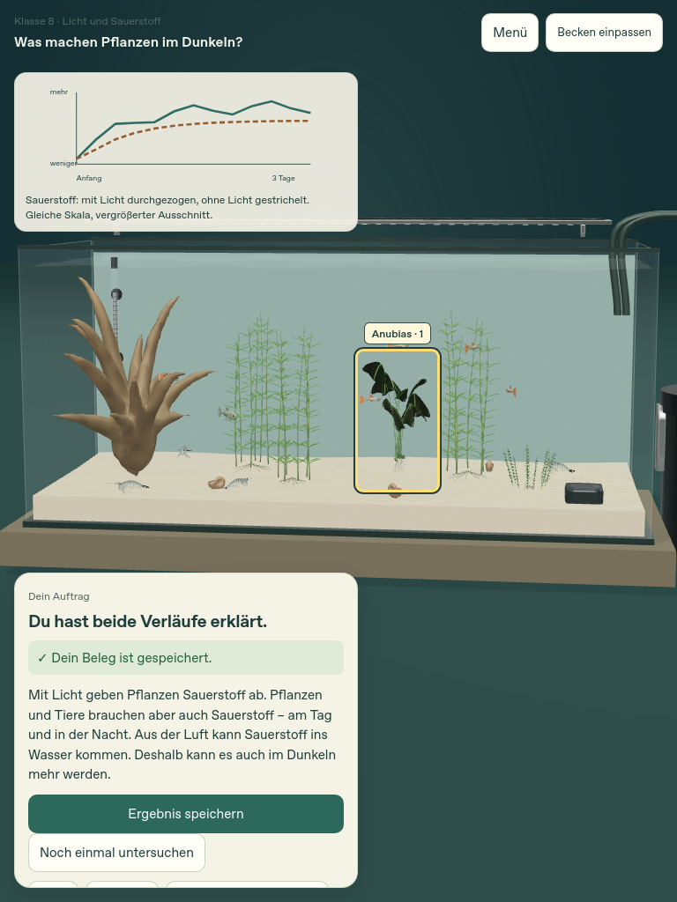
M1: vollständiger regulärer WebKit-WegHEAD 9503d1cdb2d2a0b5f1b47388f6ba13a5bc446413{'width': 768, 'height': 1024} · 2026-10-24T07:17:59.327905+00:00http://127.0.0.1:8000/aquarium-simulation/Originalbericht
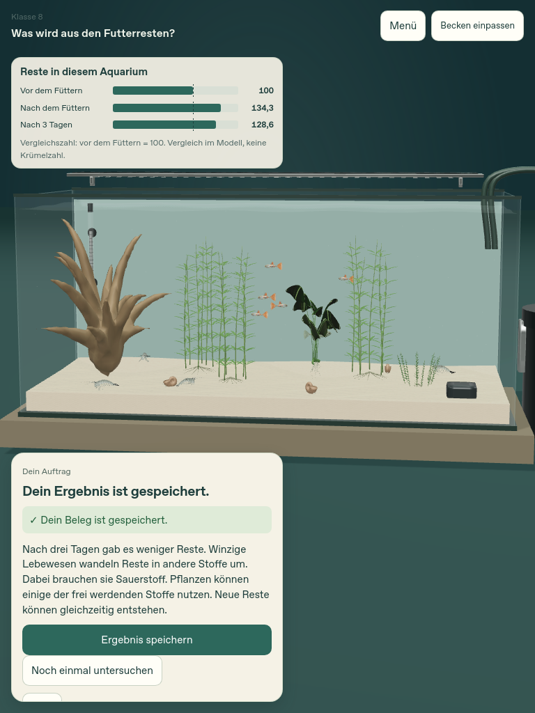
M2: vollständiger regulärer WebKit-WegHEAD 9503d1cdb2d2a0b5f1b47388f6ba13a5bc446413{'width': 768, 'height': 1024} · 2026-10-24T07:20:04.176441+00:00http://127.0.0.1:8000/aquarium-simulation/?mission=m2-food-transformationOriginalbericht
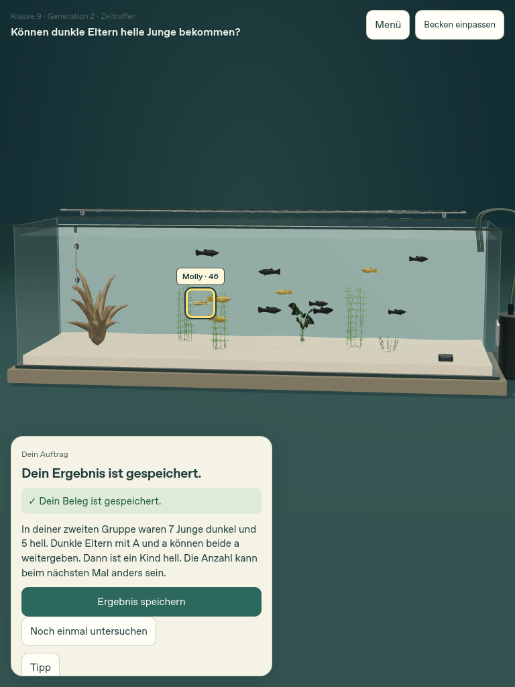
M3: vollständiger regulärer WebKit-WegHEAD 9503d1cdb2d2a0b5f1b47388f6ba13a5bc446413{'width': 768, 'height': 1024} · 2026-10-24T07:21:32.223937+00:00http://127.0.0.1:8000/aquarium-simulation/?mission=m3-hidden-inheritanceOriginalbericht
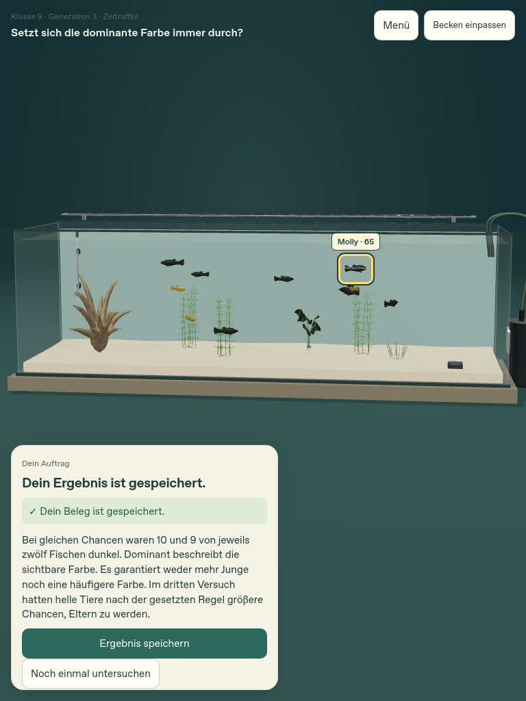
M4: vollständiger regulärer WebKit-WegHEAD 9503d1cdb2d2a0b5f1b47388f6ba13a5bc446413{'width': 768, 'height': 1024} · 2026-10-24T07:23:39.390504+00:00http://127.0.0.1:8000/aquarium-simulation/?mission=m4-dominance-frequencyOriginalbericht
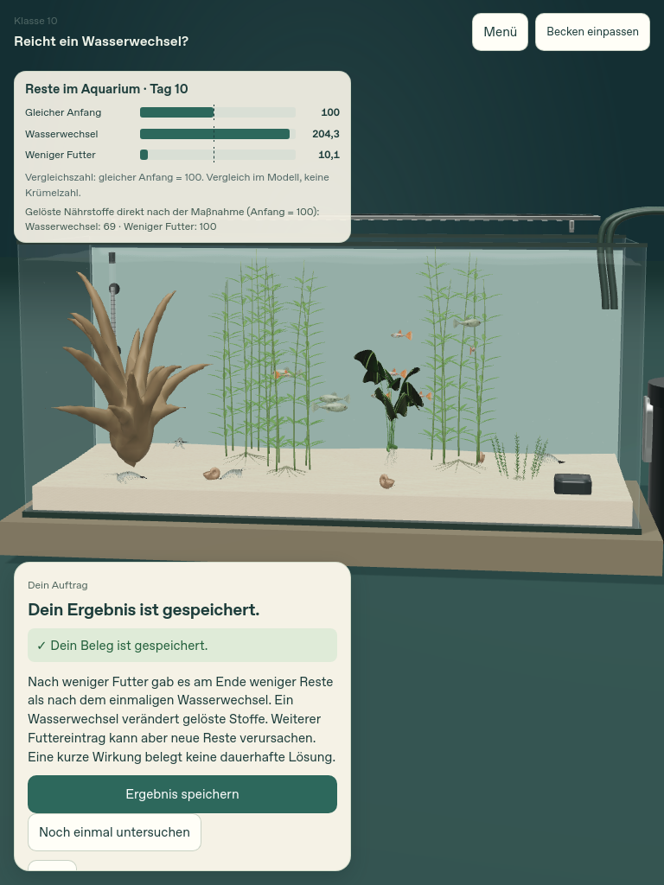
M5: vollständiger regulärer WebKit-WegHEAD 9503d1cdb2d2a0b5f1b47388f6ba13a5bc446413{'width': 768, 'height': 1024} · 2026-10-24T07:27:24.612066+00:00http://127.0.0.1:8000/aquarium-simulation/?mission=m5-recurring-inputOriginalbericht
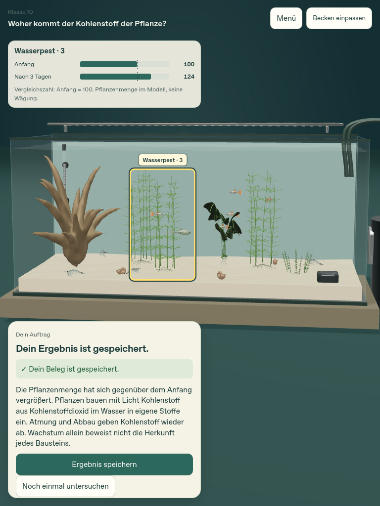
M6: vollständiger regulärer WebKit-WegHEAD 9503d1cdb2d2a0b5f1b47388f6ba13a5bc446413{'width': 768, 'height': 1024} · 2026-10-24T07:29:50.518009+00:00http://127.0.0.1:8000/aquarium-simulation/?mission=m6-plant-carbonOriginalbericht
Quellvergleich: biologische Berechnung, Missionsmodelle und Inhalte unverändert · Modultests · Vollständiger Prüfstatus, Einschränkungen und Reproduktion